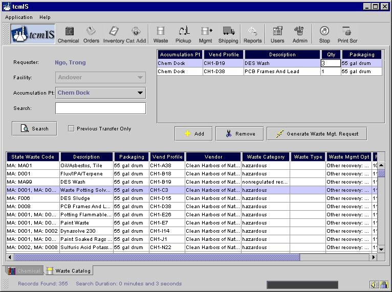
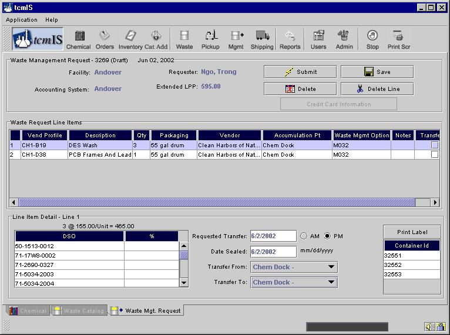
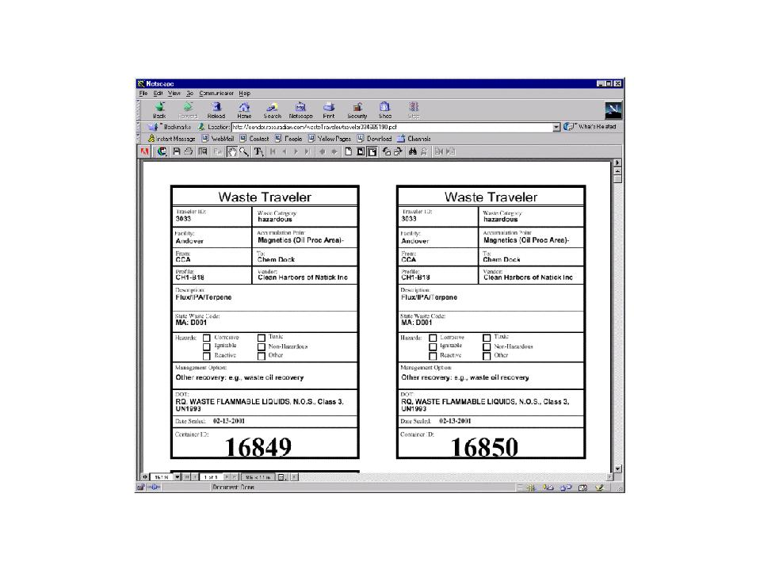

Once you have generated your waste and you want to send it to waste management, you must generate a Waste Management Request. To do this, select the waste catalog item you want managed from the Waste Catalog by double clicking on it, or clicking once and then clicking the Add button in the Generate Waste Management Request Area, the area in the top right quadrant of the screen. You can continue searching and adding to the request area until all of your containers are collected. Note that each line in the Waste Catalog represents a specific waste profile in a specific type of container.

The wastes you selected are now in the Request Area and you're ready to check out. First, you need to set the Quantity to the correct number of containers - tcmIS is going to automatically generate container ids for each of the containers that you specify. Change the Quantity by double clicking on the current number and entering your number. (Note: all waste quantities will be expressed as "each"; a 55-gallon drum, 30-gallon drum, and 5-gallon pail will all be ordered as one "each" and will all be a separate line item in the catalog.)
If you make a mistake in ordering, remove the item by clicking on the corresponding line then clicking on the Remove button. When you're ready to process the order simply click on the Generate Waste Management Request button. This summarizes your order so you can review/edit the order before submitting the waste pickup request.
tcmIS takes you from the Waste Catalog tab to the Waste Management Request tab automatically (Figure below) where you can then assign the transfer location for each line item on the request. Note that tcmIS has assigned a container id to each container on each line.

You must select from the Transfer Location drop-downmenu to indicate the generating location for the request and the storage area the waste is destined for; this information applies to all line items on the request. If entered, a default generating location and waste storage area for the selected Work Area will be automatically displayed. You must also enter the date that the containers on that line were sealed - this will start environmental clocks to inform managers of the age of waste in each of the containers.
This screen also gives you the option of adding charge numbers for allocating charges for line items in the waste transfers. The need to allocate charges, and the method of allocation, has generally been specific to each region, and tcmIS can accommodate the regional needs. If you make a mistake, the system will catch it and direct you to the problem. Please note the Extended LPP field in the upper part of the Waste Management Request screen.
In some cases the 90-day generator storage area manager may NOT get a transfer request from the generator, but instead transfers containerized waste on a daily basis. In such cases the 90-day generator storage area manager should still enter the waste management request to track the waste.
To add any notes to the request, double-click on the Notes field (2nd column from the right in figure above) and a notes box appears to allow you to enter any special notes. Anyone viewing the Waste Order Tracking screen (discussed later in this tutorial) will be able to view the notes.
To execute your waste management request, click the Submit button. If a request is not submitted - e.g., the requestor did not click the Submit button on the Waste Management Request screen - the request will be held as a draft request. No date appears in the request date column for draft requests. When you submit your request, a dialog box appears that allows you one more chance to revise the request. The box also lets you know where the request is going next. If you are not ready to submit, you may save your work and return to it later through the Waste Transfer Management screen.
Once your request is submitted, you can generate Waste Traveler labels for all of the containers on each line by clicking on the button Print Label.

The Waste Traveler Label, is shown above. This label can be printed on standard four-per page label paper and attached to the drum. A unique number is displayed on the label to allow for container tracking if desired.
This label can also be printed from the right-mouse detail box on lines of subsequent screens.
That completes the steps for submittal of a waste management request from the catalog.